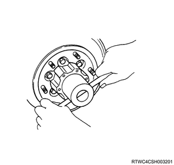

Front differential assembly removal (All models)
1. Disc wheel removal
1. Remove the disc wheel from vehicle.
2. Front axle differential oil drain
1. Drain the front axle differential oil from the front axle assembly.
Note
- Remove the filler plug and gasket to drain oil.
3. Brake caliper assembly removal
1. Remove the brake caliper assembly from the knuckle.
Note
- Remove 2 bolts from the knuckle arm rear side.
- Remove the brake caliper with the brake hose attached together with the brake support.
Caution
- By using a wire, etc., secure and hold the brake caliper to the frame, etc.
4. Front wheel speed sensor safety information
Caution
- If the wheel speed sensor is damaged in the course of the maintenance works, that may cause the following symptoms.
- ABS abnormalities due to sensor damage
- In case of ABS failure or ABS malfunction due to improper sensor installation, installation/removal of the wheel speed sensor, or replacement of the wheel speed sensor, follow the precautions indicated in the procedure for the work.
5. Front wheel speed sensor disconnect
1. Disconnect the harness connector from the wheel speed sensor.
6. Front wheel speed sensor removal
1. Remove the harness clip from the harness.
Note
- Disconnect the harness clip lock indicated by the arrow.
- Remove the harness bracket.
2. Remove the wheel speed sensor from the knuckle.
Caution
- When the wheel speed sensor body does not come off easily due to the rust on the knuckle or support, use a rust penetrant, etc., and carefully remove the sensor body by shifting it little by little.
- Be careful not to hit or step on the removed sensor.
- Never perform following works.
- Remove the sensor body by hammering.
- Insert a flat-head screwdriver or the like into the gap to remove it forcibly.
- When removing the wheel speed sensor, do not pull the harness.
Note
- Remove the sensor fixing bolt.

- Connector position
- Front speed sensor assembly
- Harness bracket tightening nut
- Harness bracket tightening bolt
- Sensor tightening bolt
7. Hub cap removal
1. Remove the hub cap from the front hub.

8. Flange removal
Note
- The following applies to the 4WD vehicles.
1. Remove the flange from the front hub.
Note
- Remove the snap ring and shim, and then remove the flange from the front hub.
9. Lock washer removal
1. Remove the lock washer from the bearing lock nut.
10. Bearing lock nut removal
1. Remove the bearing lock nut from the knuckle using special tool.
Note
- Remove using a hub nut wrench.

SST: 5-8840-2117-0 - hub nut wrench

11. Front hub rotor assembly removal
1. Remove the front hub rotor assembly from the knuckle.
12. Front propeller shaft assembly removal
13. Shock absorber removal
1. Remove the stabilizer link from the lower control arm.
Caution
- Be careful not to damage the ball joint boots.
Note
- Put a setting mark to a cam bolt and the suspension cross member.
- Loosen the nut and cam bolt of the lower control arm.
2. Hold the lower control arm using the jack.
3. Remove the shock absorber from the lower control arm.
4. Remove the lower ball joint from the knuckle using special tool.

SST: 5-8840-2017-0 - ball joint remover

- 5-8840-2017-0
5. Remove the lower control arm from the frame.
6. Remove the shock absorber from the frame.
14. Stabilizer link disconnect
1. Disconnect the stabilizer link from the lower control arm.
Note
- Remove the lower nut of the stabilizer link.
15. Tie rod end disconnect
1. Disconnect the tie rod end from the knuckle.

SST: 5-8840-2005-0 - ball joint remover

- Ball joint remover
16. Breather hose disconnect
1. Disconnect the breather hose from the front axle assembly.
17. Actuator disconnect
1. Disconnect the connector from the actuator.
18. Lower control arm removal
1. Remove the lower control arm from the suspension cross member assembly.
Note
- Remove the bolt and nut, and then remove from the suspension cross member.
19. Knuckle removal
1. Remove the knuckle from the upper control arm.
Note
- Disconnect the right side upper control arm and knuckle, and then remove the lower control arm together with the knuckle.
Caution
- When removing the knuckle, be careful not to damage the oil seal in the knuckle.
20. Suspension cross member removal
1. Remove the suspension cross member assembly from the frame.
21. Front drive axle assembly removal
1. Remove the front drive axle assembly from vehicle.
Note
- Support the differential case with a jack.
- Remove the front axle installation bolt and nut and slowly lower the jack.
- Remove the end of the right side drive shaft from the knuckle and lower the axle assembly from the vehicle.

Caution
- During work, confirm that the axle assembly is securely supported.
- Make sure interference does not cause damage to the bellows of the power steering unit by interference.
- Make sure interference does not cause damage to the shift-on-the-fly breather pipe and breather pipe bracket.
22. Inside drive shaft removal
1. Remove the inside drive shaft from the front drive axle assembly.
Note
- Remove the mounting bolts from the axle mounting bracket.
- Remove the left side drive shaft assembly together with the mounting bracket.
- Remove the right side drive shaft assembly.
23. Front differential assembly removal
1. Remove the front differential assembly from the axle case.